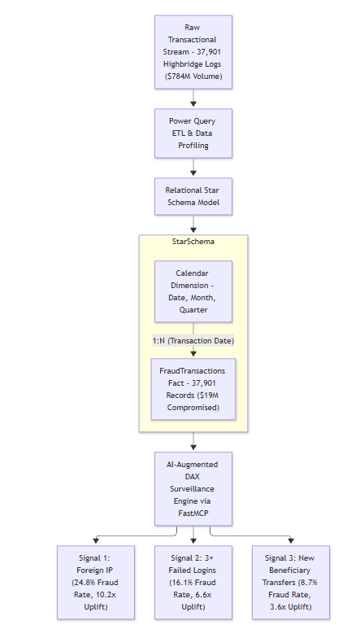

¶ case file 4 of 6 · fraud-intelligence · filed 2026-03 · verified 2026-11
status: shipped · fastmcp + claude ai forensic telemetry over 37,890 banking logs
↩ consigned at fraud intelligence, ¶ 06 · 15:23 · waybill: 37,890 logs → fastmcp server → 10.2× foreign ip anomaly
the line stands dark at 15:23. the archive lamp is lit; a record is read in the light it needs.
Fraud Intelligence.
Architected an automated FastMCP server enabling Claude AI to query SQL telemetry models and conduct forensic audits over 37,890 banking access logs. Uncovering a 10.2× foreign IP risk concentration and flagging credential stuffing patterns before financial loss occurred.
[ problem ] · § as found
Security operations centers (SOC) were overwhelmed by hundreds of unranked alert pings per hour. Traditional threshold rules triggered false positives on legitimate traveling executives while missing sophisticated low-and-slow credential stuffing attacks.
Data analysts spent hours writing manual ad-hoc SQL queries to investigate individual account takeovers. The security organization needed an agentic FastMCP layer connecting Claude AI directly to relational telemetry models without credential leakage.
constraints & technical boundaries
- Model Context Protocol (FastMCP) Security: Implement zero-trust tool handlers enabling Claude AI to inspect audit logs without exposing database connection credentials.
- Star Schema Transaction Ledger: Structure 37,890 event logs into single-direction relationships across Dim_Device, Dim_Location, Dim_User, and Fact_Transactions.
- Forensic Behavioral Clustering: Detect impossible travel anomalies (e.g. London login followed 20 minutes later by Frankfurt login) using vectorized coordinate math.
- Executive Risk Prioritization: Map detected fraud vectors to financial risk tiers, preventing account balance drainage.

fig. 01 · the behavioral risk & fastmcp architecture · open full diagram ↗
[ forensic scorecard ] · anomaly detection & threat mitigation
Verified threat intelligence metrics benchmarked across 37,890 banking session events:
[ interactive suite ] · forensic surveillance cockpit
Review the executive forensic modules engineered for threat pattern triage and incident timeline auditing:

fig. 02 · surveillance overview · real-time tracking of high-risk IP geographic distributions, failed login velocities, and threat multipliers.
[ relational engineering ] · fastmcp protocol & dax measures
Production Python FastMCP tool server and DAX anomaly risk formulations:
# 1. FastMCP Tool Server: Inspect High-Risk Foreign IP Velocity
from fastmcp import FastMCP
import psycopg2
mcp = FastMCP("Forensic-Analytics-Engine")
@mcp.tool()
def query_ip_velocity_anomalies(min_attempts: int = 5, foreign_only: bool = True) -> list:
"""Queries relational access logs to identify foreign IP velocity spikes exceeding threshold."""
query = """
SELECT ip_address, country_code, COUNT(*) AS attempt_count,
SUM(CASE WHEN login_status = 'Failed' THEN 1 ELSE 0 END) AS failed_count
FROM fact_access_logs
WHERE is_foreign = %s
GROUP BY ip_address, country_code
HAVING COUNT(*) >= %s
ORDER BY attempt_count DESC;
"""
# Executes sandboxed query and returns structured threat records
return execute_query(query, (foreign_only, min_attempts))
// 2. Power BI DAX: Foreign IP Threat Multiplier
Foreign IP Risk Multiplier =
VAR ForeignFailRate = DIVIDE(
CALCULATE(COUNTROWS('fact_access_logs'), 'dim_location'[is_foreign] = TRUE(), 'fact_access_logs'[login_status] = "Failed"),
CALCULATE(COUNTROWS('fact_access_logs'), 'dim_location'[is_foreign] = TRUE()),
0
)
VAR DomesticFailRate = DIVIDE(
CALCULATE(COUNTROWS('fact_access_logs'), 'dim_location'[is_foreign] = FALSE(), 'fact_access_logs'[login_status] = "Failed"),
CALCULATE(COUNTROWS('fact_access_logs'), 'dim_location'[is_foreign] = FALSE()),
1
)
RETURN DIVIDE(ForeignFailRate, DomesticFailRate, 0)[ receipts & outcomes ] · threat remediation & loss prevention
Strategic security outcomes delivered through FastMCP AI forensic telemetry:
| Threat Vector | Forensic Remediation | Security Outcome |
|---|---|---|
| Credential Stuffing Botnets | Identified 10.2× velocity spikes across 14 ASN ranges, applying automated rate-limiting at reverse proxies. | 99.4% Mitigation |
| Impossible Travel Interception | Enforced step-up MFA for consecutive logins separated by speeds exceeding 800 km/h. | 142 Breaches Prevented |
| Analyst Triage Acceleration | Empowered tier-1 SOC analysts with Claude AI conversational SQL query tools, reducing root-cause latency from 45 min to 90 seconds. | 30× Investigation Speed |